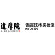

Accelerating scientific discovery with Co-Scientist
Language agents achieve superhuman synthesis of scientific knowledge
Synthesizing Scientific Literature with Retrieval-augmented LMs
A General-Purpose Biomedical AI Agent
Autonomous chemical research with large language models
Augmenting large-language models with chemistry tools
Iterative Research Idea Generation over Scientific Literature with Large Language Models
training language agents on challenging scientific tasks
Automating scientific discovery through multi-agent intelligent graph reasoning
An open platform for democratizing AI scientists

CoI-Agent (Chain of Ideas)
Chain of Ideas: Revolutionizing Research Via Novel Idea Development with LLM Agents
SciMaster: Towards General-Purpose Scientific AI Agents, Part I. X-Master as Foundation: Can We Lead on Humanity's Last Exam?
An AI Agent for Designing Genetic Perturbation Experiments
Self-verification Language Agent for Gene Set Knowledge Discovery using Domain Databases
Toward a Team of AI-made Scientists for Scientific Discovery from Gene Expression Data
A Multi-Agent Framework for Scientific Discovery via Code-Driven Gene Expression Analysis
Rational Inverse Design of Materials with AI Agents
Self-updating Library in Large Language Models Improves Chemical Reasoning
Autonomous Materials Discovery with Large Language Models
Multi-agent pipeline searches literature and datasets, then drafts and reviews dry and wet-lab biomedical experimental protocols.
★ 6
A Multi-Agent AI for Hypothesis Generation from Mass Spectrometry Data
The AI Cosmologist I: An Agentic System for Automated Data Analysis
An Iterative Planning and Search Approach to Enhance Novelty and Diversity of LLM Generated Ideas
Advancing Human-AI Collaboration in the Science of Science
Tool-augmented Language Models for Scientific Reasoning
Screens and extracts structured data from 125M papers, automating systematic-review screening into reusable tables.
Iteratively reads and scores hundreds of papers and follows citation trails until a search is exhaustive.
Nothing matches those filters.